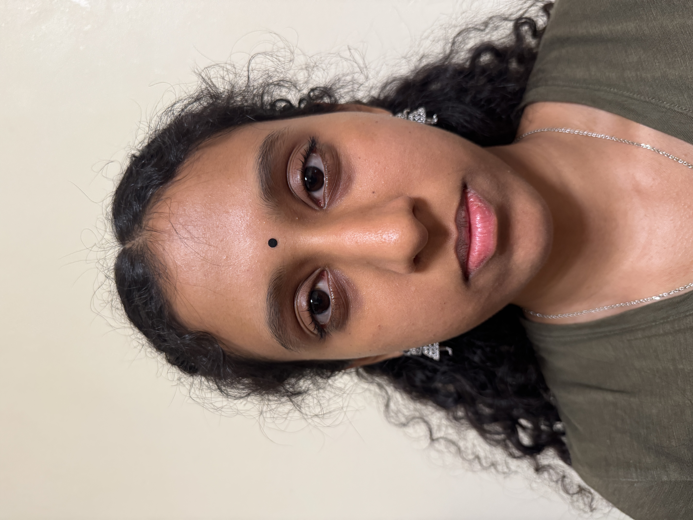
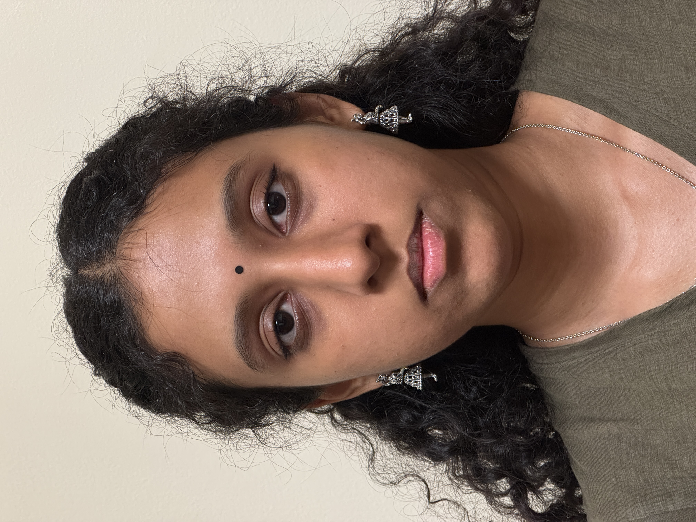
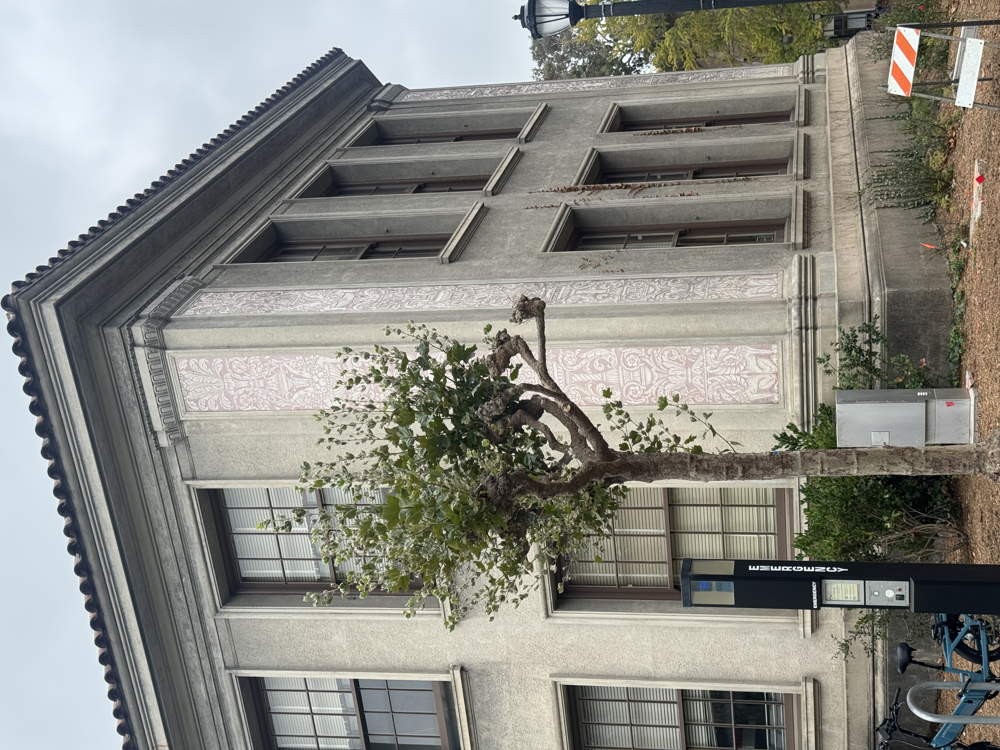
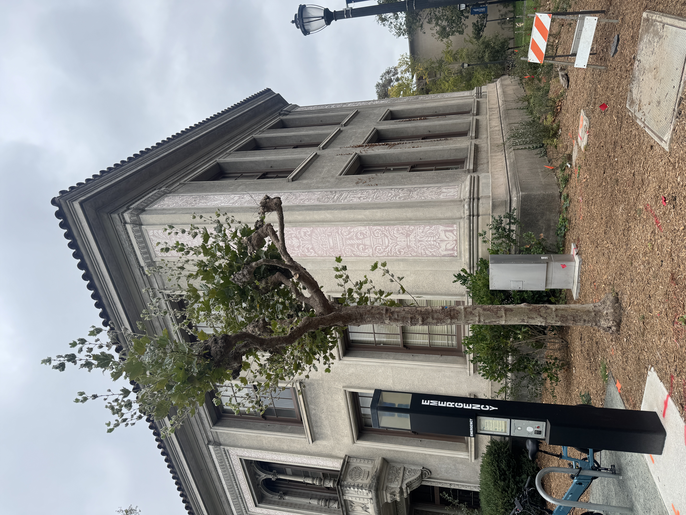
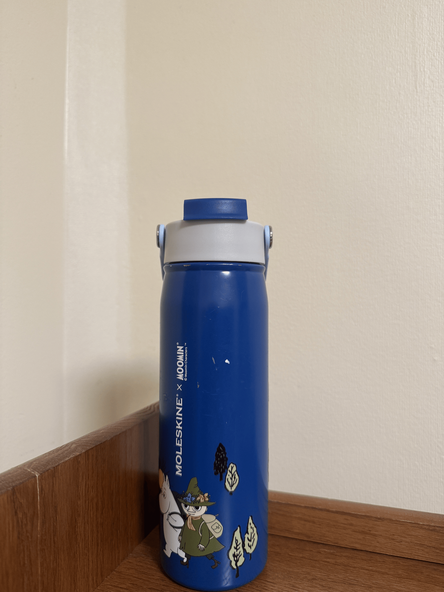
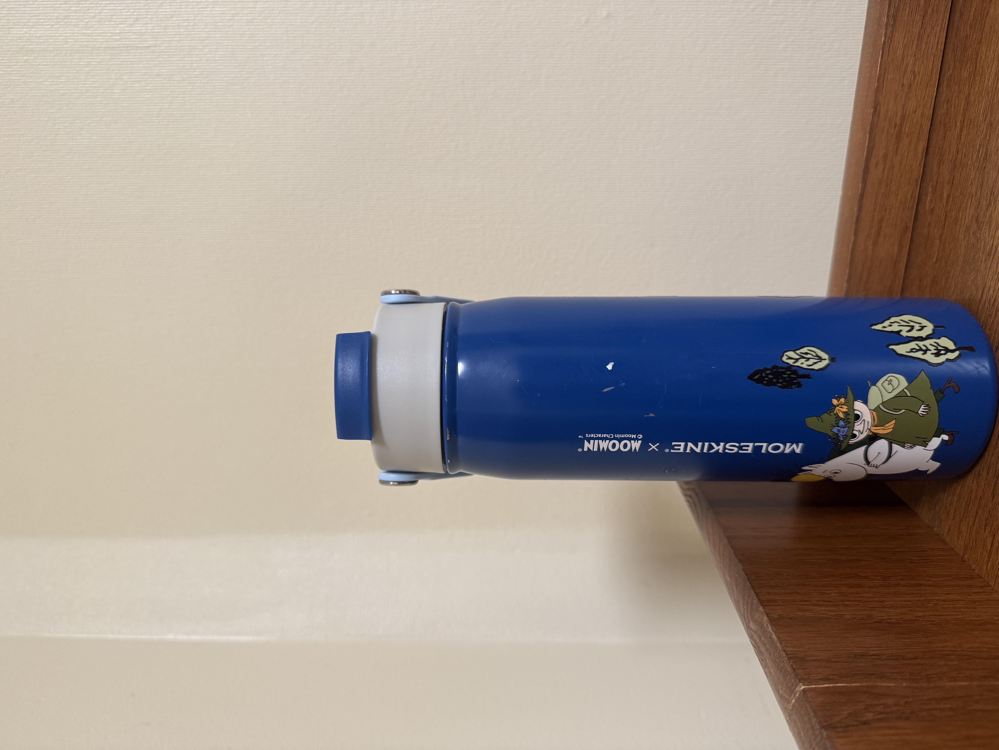
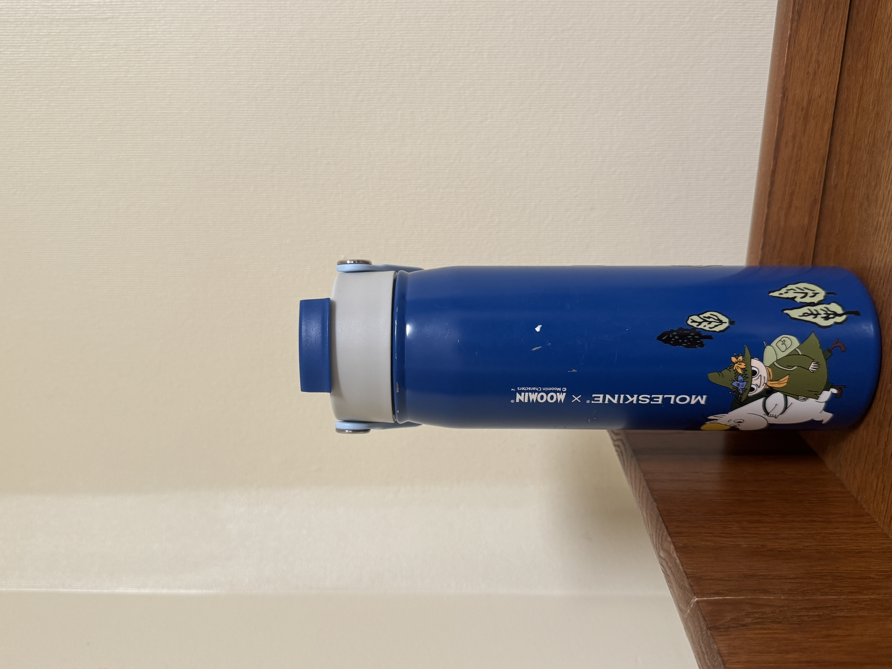
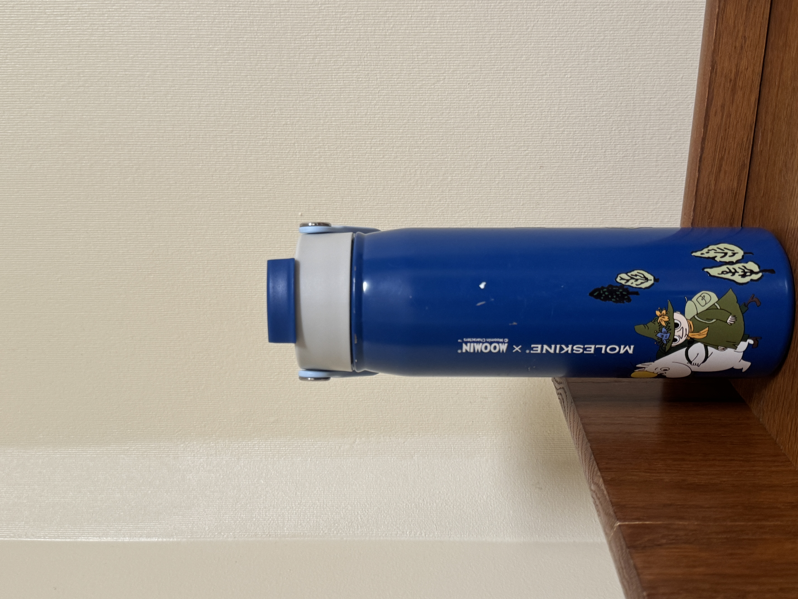
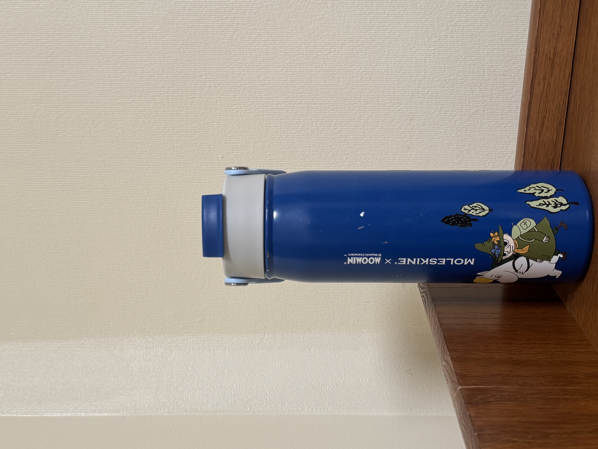
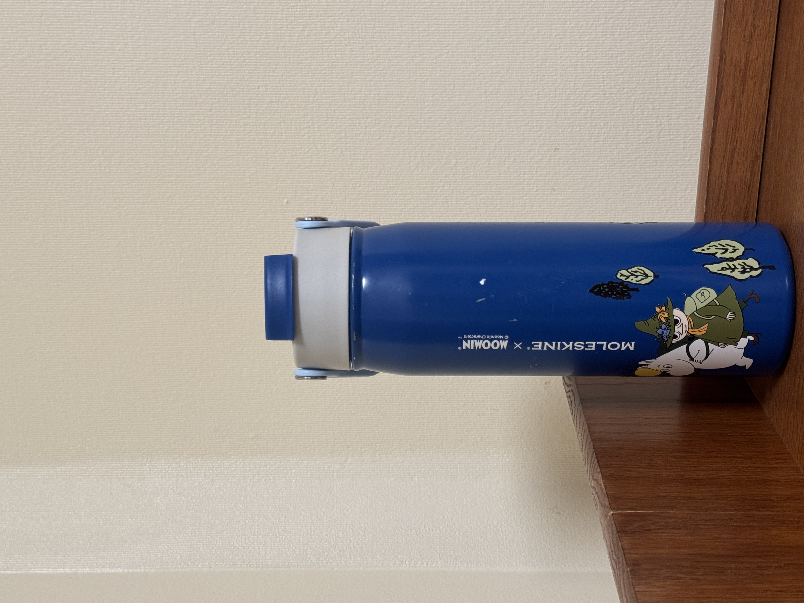

CS 180 — Project 0
Atharshlakshmi Vijayakumar
Part 1 — Selfie: The Wrong Way vs. The Right Way


I got a friend to take 2 pictures of me. One with the camera close to my face and the other from a distance using 2x zoom.
Observations & why it happens
Zoomed in from a distance, my face looks flatter and more even. The proportions read closer to how they look in real life. Up close, the camera distorts my face where the center (nose and forehead) looks bigger and pushed toward the viewer, while the sides curve inward. This happens because at close range, the camera is much closer to the parts of my face nearest the lens than to the parts farther away, so nearby features are magnified relative to the rest which causes a strong perspective effect. Zooming in from farther away flattens this out because the difference in distance between near and far features becomes proportionally much smaller.
Part 2 — Architectural Perspective Compression


Took 2 pictures of a pretty building! I took one while standing close to it and another from a distance at 2x zoom.
Observations & why it happens
The zoomed, far-away shot makes the building look flatter and more compressed. The close-up, no-zoom shot exaggerates depth where edges converge more sharply. This is the same perspective effect as Part 1. The distance changes how much foreground and background elements differ in apparent size, and zooming from farther away narrows that gap, which compresses the scene.
Part 3 — The Dolly Zoom

Frames





I used my water bottle as my model for this experiment.
Observations & why it happens
As I moved the camera back and zoomed in to keep the water bottle the same size in frame, the background seemed to rush toward it. This happens because zooming in narrows the field of view, so the background fills more of the frame even though the subject's size stays the same. The subject looks static while everything around it stretches and closes in.